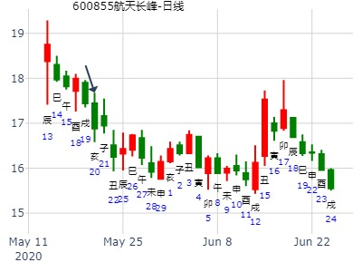
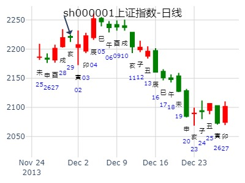

[原创]六爻测个股走势（欢迎爱好者共同讨论、研究）！
性别：女
起卦时间：2008年1月15日11时50分
神煞：驿马－申 桃花－卯 日禄－寅 贵人－丑，未
时间: 2008-01-15
干支: 丁亥年癸丑月甲寅日 (旬空: 子丑 )
蹇静卦
玄武 ▅▅ ▅▅ 子孙子水
白虎 ▅▅▅▅▅ 父母戌土
腾蛇 ▅▅ ▅▅ 兄弟申金 世
勾陈 ▅▅▅▅▅ 兄弟申金
朱雀 ▅▅ ▅▅ 官鬼午火
青龙 ▅▅ ▅▅ 父母辰土 应
与楼主共同学习探讨一下，看看000503今日如何，能收红不？收盘价多少？
002549 凯美特气，水山蹇 真无财可得？
出生：2020 年 性别：女 占事：没填
公历起卦时间：2020年2月8日10时4分 (在线摇卦)
干支：庚子年 戊寅月 辛巳日 癸巳时 （日空：申酉）
神煞：驿马－亥 桃花－午 日禄－酉 贵人－寅，午
兑宫：水山蹇 兑宫：水山蹇
六神 伏神 本 卦 变 卦
腾蛇 子孙戊子水 ▅▅ ▅▅ 子孙戊子水 ▅▅ ▅▅
勾陈 父母戊戌土 ▅▅▅▅▅ 父母戊戌土 ▅▅▅▅▅
朱雀 兄弟戊申金 ▅▅ ▅▅ 世 兄弟戊申金 ▅▅ ▅▅ 世
青龙 兄弟丙申金 ▅▅▅▅▅ 兄弟丙申金 ▅▅▅▅▅
玄武 妻财丁卯木 官鬼丙午火 ▅▅ ▅▅ 官鬼丙午火 ▅▅ ▅▅
白虎 父母丙辰土 ▅▅ ▅▅ 应 父母丙辰土 ▅▅ ▅▅ 应
点评： 世爻月破旬空，反而涨。
六爻测上证指数2020.2.14走势？
2.14上证走势？
公历起卦时间：2020年2月13日17时34分 (电脑自动)
干支：庚子年 戊寅月 丙戌日 丁酉时 （日空：午未）
神煞：驿马－申 桃花－卯 日禄－巳 贵人－酉，亥
兑宫：水山蹇 兑宫：水山蹇
六神 伏神 本 卦 变 卦
青龙 子孙戊子水 ▅▅ ▅▅ 子孙戊子水 ▅▅ ▅▅
玄武 父母戊戌土 ▅▅▅▅▅ 父母戊戌土 ▅▅▅▅▅
白虎 兄弟戊申金 ▅▅ ▅▅ 世 兄弟戊申金 ▅▅ ▅▅ 世
腾蛇 兄弟丙申金 ▅▅▅▅▅ 兄弟丙申金 ▅▅▅▅▅
勾陈 妻财丁卯木 官鬼丙午火 ▅▅ ▅▅ 官鬼丙午火 ▅▅ ▅▅
朱雀 父母丙辰土 ▅▅ ▅▅ 应 父母丙辰土 ▅▅ ▅▅ 应
试测上证涨幅
占事：试测上证己亥年子、丑月及庚子年寅月，3个月中哪月涨幅最大？
公历起卦时间：2020年2月23日15时35分 (电脑自动)
干支：庚子年 戊寅月 丙申日 丙申时 （日空：辰巳）
神煞：驿马－寅 桃花－酉 日禄－巳 贵人－酉，亥
兑宫：水山蹇 兑宫：水山蹇
六神 伏神 本 卦 变 卦
青龙 子孙戊子水 ▅▅ ▅▅ 子孙戊子水 ▅▅ ▅▅
玄武 父母戊戌土 ▅▅▅▅▅ 父母戊戌土 ▅▅▅▅▅
白虎 兄弟戊申金 ▅▅ ▅▅ 世 兄弟戊申金 ▅▅ ▅▅ 世
螣蛇 兄弟丙申金 ▅▅▅▅▅ 兄弟丙申金 ▅▅▅▅▅
勾陈 妻财丁卯木 官鬼丙午火 ▅▅ ▅▅ 官鬼丙午火 ▅▅ ▅▅
朱雀 父母丙辰土 ▅▅ ▅▅ 应 父母丙辰土 ▅▅ ▅▅ 应
上证2.27、28走势？-
上证2.27、28dn?
公历起卦时间：2020年2月27日7时58分 (电脑自动)
干支：庚子年 戊寅月 庚子日 庚辰时 （日空：辰巳）
神煞：驿马－寅 桃花－酉 日禄－申 贵人－丑，未
兑宫：水山蹇 兑宫：水山蹇
六神 伏神 本 卦 变 卦
螣蛇 子孙戊子水 ▅▅ ▅▅ 子孙戊子水 ▅▅ ▅▅
勾陈 父母戊戌土 ▅▅▅▅▅ 父母戊戌土 ▅▅▅▅▅
朱雀 兄弟戊申金 ▅▅ ▅▅ 世 兄弟戊申金 ▅▅ ▅▅ 世
青龙 兄弟丙申金 ▅▅▅▅▅ 兄弟丙申金 ▅▅▅▅▅
玄武 妻财丁卯木 官鬼丙午火 ▅▅ ▅▅ 官鬼丙午火 ▅▅ ▅▅
白虎 父母丙辰土 ▅▅ ▅▅ 应 父母丙辰土 ▅▅ ▅▅ 应

主帖标题: 股市诸葛神数测试
6001333 输入的三个汉字为：深 线 境
卦语：已遂心头愿 始知志气伸 三山须把握 频频定太平
占事：601333 何时出货最佳？
公历时间：2007年3月27日15时28分 星期二
干支：丁亥年 癸卯月 庚申日 甲申时 (旬空：子丑)
神煞：驿马—寅 桃花—酉 日禄—申 贵人—寅，午
兑宫：水山蹇 六神 伏 神 【本 卦】
螣蛇 ▅▅ ▅▅ 子孙戊子水
勾陈 ▅▅▅▅▅ 父母戊戌土
朱雀 ▅▅ ▅▅ 兄弟戊申金 世
青龙 ▅▅▅▅▅ 兄弟丙申金
玄武 妻财丁卯木 ▅▅ ▅▅ 官鬼丙午火
白虎 ▅▅ ▅▅ 父母丙辰土 应
财星得月建生助，旺相。藏而不出，冲开伏神午火，可出货。
另，酉日冲动卯木，也可出货。3月28日（周三）酉日冲动卯木，可以出货！
3月29日（周四）戍日，财星被合，下跌时可以入货，
待下周一、周二4月2日或4月3日寅卯财星当值，可出货。
[此贴子已经被作者于2007-3-28 16:11:40编辑过]
主帖标题: 3.15上证收盘十位数
4
公历起卦时间：2021年3月15日8时18分 (电脑自动)
干支：辛丑年 辛卯月 壬戌日 甲辰时 （日空：子丑）
神煞：驿马－申 桃花－卯 日禄－亥 贵人－卯，巳
兑宫：水山蹇 兑宫：水山蹇
六神 伏神 本 卦 变 卦
白虎 子孙戊子水 ▅▅ ▅▅ 子孙戊子水 ▅▅ ▅▅
螣蛇 父母戊戌土 ▅▅▅▅▅ 父母戊戌土 ▅▅▅▅▅
勾陈 兄弟戊申金 ▅▅ ▅▅ 世 兄弟戊申金 ▅▅ ▅▅ 世
朱雀 兄弟丙申金 ▅▅▅▅▅ 兄弟丙申金 ▅▅▅▅▅
青龙 妻财丁卯木 官鬼丙午火 ▅▅ ▅▅ 官鬼丙午火 ▅▅ ▅▅
玄武 父母丙辰土 ▅▅ ▅▅ 应 父母丙辰土 ▅▅ ▅▅ 应
主帖标题: 601998【中信银行】
宁波银行下周涨跌？
起卦方式：手工指定
公历时间：2009年4月19日12时35分 星期日
干支：己丑年 戊辰月 甲午日 庚午时 (旬空：辰巳)
神煞：驿马—申 桃花—卯 日禄—寅 贵人—丑，未
兑宫：水山蹇 六神 伏 神 【本 卦】
玄武 ▅▅ ▅▅ 子孙戊子水
白虎 ▅▅▅▅▅ 父母戊戌土
螣蛇 ▅▅ ▅▅ 兄弟戊申金 世
勾陈 ▅▅▅▅▅ 兄弟丙申金
朱雀 妻财丁卯木 ▅▅ ▅▅ 官鬼丙午火
青龙 ▅▅ ▅▅ 父母丙辰土 应
占事：002028思源电气近二周涨跌？
公历起卦时间：2015年4月22日9时29分 (阿晖在线摇卦)
干支：乙未年 庚辰月 戊辰日 丁巳时 （日空：戌亥）
兑宫：水山蹇 兑宫：水山蹇
六神 伏神 本 卦 变 卦
朱雀 子孙戊子水 ▅▅ ▅▅ 子孙戊子水 ▅▅ ▅▅
青龙 父母戊戌土 ▅▅▅▅▅ 父母戊戌土 ▅▅▅▅▅
玄武 兄弟戊申金 ▅▅ ▅▅ 世 兄弟戊申金 ▅▅ ▅▅ 世
白虎 兄弟丙申金 ▅▅▅▅▅ 兄弟丙申金 ▅▅▅▅▅
腾蛇 妻财丁卯木 官鬼丙午火 ▅▅ ▅▅ 官鬼丙午火 ▅▅ ▅▅
勾陈 父母丙辰土 ▅▅ ▅▅ 应 父母丙辰土 ▅▅ ▅▅ 应
主帖标题: 2016丙申年上证指数每天预测实战探索（每天在回复中更新）
周一大盘涨跌
起卦公历：2016年4月9日7时33分(北京时间)。
起卦农历：二○一六年 三月 初三日 辰时。
干支： 丙申年 壬辰月 辛酉日 壬辰时
主变卦 水山蹇(兑宫) 之 水山蹇(兑宫) [空亡:子、丑]
腾蛇 ━ ━ 子孙子水 ━ ━ 子孙子水
勾陈 ━━━ 父母戌土 ━━━ 父母戌土
朱雀 ━ ━ 兄弟申金 世 ━ ━ 兄弟申金 世
青龙 ━━━ 兄弟申金 ━━━ 兄弟申金
玄武 妻财卯木 ━ ━ 官鬼午火 ━ ━ 官鬼午火
白虎 ━ ━ 父母辰土 应 ━ ━ 父母辰土 应
主帖标题: 300指数明天走势如何
公历起卦时间：2020年4月2日18时56分 (电脑自动)
干支：庚子年 己卯月 乙亥日 乙酉时 （日空：申酉）
神煞：驿马－巳 桃花－子 日禄－卯 贵人－子，申
兑宫：水山蹇 兑宫：水山蹇
六神 伏神 本 卦 变 卦
玄武 子孙戊子水 ▅▅ ▅▅ 子孙戊子水 ▅▅ ▅▅
白虎 父母戊戌土 ▅▅▅▅▅ 父母戊戌土 ▅▅▅▅▅
螣蛇 兄弟戊申金 ▅▅ ▅▅ 世 兄弟戊申金 ▅▅ ▅▅ 世
勾陈 兄弟丙申金 ▅▅▅▅▅ 兄弟丙申金 ▅▅▅▅▅
朱雀 妻财丁卯木 官鬼丙午火 ▅▅ ▅▅ 官鬼丙午火 ▅▅ ▅▅
青龙 父母丙辰土 ▅▅ ▅▅ 应 父母丙辰土 ▅▅ ▅▅ 应
兄弟旬空，又逢到子日冲飞露伏。
主帖标题: 2021年5月大盘涨跌卦
占事：2021年5月大盘涨跌？
公历起卦时间：2021年4月30日15时58分 (手工指定)
干支：辛丑年 壬辰月 戊申日 庚申时 （日空：寅卯）
神煞：驿马－寅 桃花－酉 日禄－巳 贵人－丑，未
兑宫：水山蹇 兑宫：水山蹇
六神 伏神 本 卦 变 卦
朱雀 子孙戊子水 ▅▅ ▅▅ 子孙戊子水 ▅▅ ▅▅
青龙 父母戊戌土 ▅▅▅▅▅ 父母戊戌土 ▅▅▅▅▅
玄武 兄弟戊申金 ▅▅ ▅▅ 世 兄弟戊申金 ▅▅ ▅▅ 世
白虎 兄弟丙申金 ▅▅▅▅▅ 兄弟丙申金 ▅▅▅▅▅
螣蛇 妻财丁卯木 官鬼丙午火 ▅▅ ▅▅ 官鬼丙午火 ▅▅ ▅▅
勾陈 父母丙辰土 ▅▅ ▅▅ 应 父母丙辰土 ▅▅ ▅▅ 应
航天长峰5.18辛酉-5.22乙丑的顶？
出生：2020 年 性别：男 占事：没填
公历起卦时间：2020年5月20日10时26分 (电脑自动)
干支：庚子年 辛巳月 癸亥日 丁巳时 （日空：子丑）
神煞：驿马－巳 桃花－子 日禄－子 贵人－卯，巳
兑宫：水山蹇 兑宫：水山蹇
六神 伏神 本 卦 变 卦
白虎 子孙戊子水 ▅▅ ▅▅ 子孙戊子水 ▅▅ ▅▅
螣蛇 父母戊戌土 ▅▅▅▅▅ 父母戊戌土 ▅▅▅▅▅
勾陈 兄弟戊申金 ▅▅ ▅▅ 世 兄弟戊申金 ▅▅ ▅▅ 世
朱雀 兄弟丙申金 ▅▅▅▅▅ 兄弟丙申金 ▅▅▅▅▅
青龙 妻财丁卯木 官鬼丙午火 ▅▅ ▅▅ 官鬼丙午火 ▅▅ ▅▅
玄武 父母丙辰土 ▅▅ ▅▅ 应 父母丙辰土 ▅▅ ▅▅ 应

主帖标题: 奇怪怎么和金眼牛版主摇的卦一模一样？？？
男 占事：上证大盘在阴历四月的走势如何？
公历起卦时间：2021年5月1日17时5分 (在线摇卦)
干支：辛丑年 壬辰月 己酉日 癸酉时 （日空：寅卯）
神煞：驿马－亥 桃花－午 日禄－午 贵人－子，申
兑宫：水山蹇 兑宫：水山蹇
六神 伏神 本 卦 变 卦
勾陈 子孙戊子水 ▅▅ ▅▅ 子孙戊子水 ▅▅ ▅▅
朱雀 父母戊戌土 ▅▅▅▅▅ 父母戊戌土 ▅▅▅▅▅
青龙 兄弟戊申金 ▅▅ ▅▅ 世 兄弟戊申金 ▅▅ ▅▅ 世
玄武 兄弟丙申金 ▅▅▅▅▅ 兄弟丙申金 ▅▅▅▅▅
白虎 妻财丁卯木 官鬼丙午火 ▅▅ ▅▅ 官鬼丙午火 ▅▅ ▅▅
螣蛇 父母丙辰土 ▅▅ ▅▅ 应 父母丙辰土 ▅▅ ▅▅ 应
这个月两个蹇卦，都是涨，值得细细研究。
主帖标题: 5.12是涨？跌？幅度如何？（1）
海洋---3年 发表于 2021-5-11 20:38
中国联通600050，工商银行601398，谢谢！
联通：得干支：辛丑年 癸巳月 己未日 乙亥时 （日空：子丑）
神煞：驿马－巳 桃花－子 日禄－午 贵人－子，申
兑宫：水山蹇 兑宫：水山蹇
六神 伏神 本 卦 变 卦
勾陈 子孙戊子水 ▅▅ ▅▅ 子孙戊子水 ▅▅ ▅▅
朱雀 父母戊戌土 ▅▅▅▅▅ 父母戊戌土 ▅▅▅▅▅
青龙 兄弟戊申金 ▅▅ ▅▅ 世 兄弟戊申金 ▅▅ ▅▅ 世
玄武 兄弟丙申金 ▅▅▅▅▅ 兄弟丙申金 ▅▅▅▅▅
白虎 妻财丁卯木 官鬼丙午火 ▅▅ ▅▅ 官鬼丙午火 ▅▅ ▅▅
螣蛇 父母丙辰土 ▅▅ ▅▅ 应 父母丙辰土 ▅▅ ▅▅ 应
收小阴，幅度小
问工行：同天 艮静卦
主帖标题: 5.21是涨？跌？幅度如何？（8）
300428：
巳月 辰日
兑宫：水山蹇 兑宫：水山蹇
六神 伏神 本 卦 变 卦
朱雀 子孙戊子水 ▅▅ ▅▅ 子孙戊子水 ▅▅ ▅▅
青龙 父母戊戌土 ▅▅▅▅▅ 父母戊戌土 ▅▅▅▅▅
玄武 兄弟戊申金 ▅▅ ▅▅ 世 兄弟戊申金 ▅▅ ▅▅ 世
白虎 兄弟丙申金 ▅▅▅▅▅ 兄弟丙申金 ▅▅▅▅▅
螣蛇 妻财丁卯木 官鬼丙午火 ▅▅ ▅▅ 官鬼丙午火 ▅▅ ▅▅
勾陈 父母丙辰土 ▅▅ ▅▅ 应 父母丙辰土 ▅▅ ▅▅ 应
收阴 幅度小 （或许不准，参考自负）
测未来二周6月24日到7月5日 李炎
公历起卦时间：2019年6月22日22时21分 (手工指定)
干支：己亥年 庚午月 庚寅日 丁亥时 （日空：午未）
兑宫：水山蹇 兑宫：水山蹇
六神 伏神 本 卦 变 卦
腾蛇 子孙戊子水 ▅▅ ▅▅ 子孙戊子水 ▅▅ ▅▅
勾陈 父母戊戌土 ▅▅▅▅▅ 父母戊戌土 ▅▅▅▅▅
朱雀 兄弟戊申金 ▅▅ ▅▅ 世 兄弟戊申金 ▅▅ ▅▅ 世
青龙 兄弟丙申金 ▅▅▅▅▅ 兄弟丙申金 ▅▅▅▅▅
玄武 妻财丁卯木 官鬼丙午火 ▅▅ ▅▅ 官鬼丙午火 ▅▅ ▅▅
白虎 父母丙辰土 ▅▅ ▅▅ 应 父母丙辰土 ▅▅ ▅▅ 应
空下伏神，易于引拔，可是长线不吉。毕竟四大凶卦。
主帖标题: 成长N
占事：工商银行庚子年未月成长性走势
出生：2020 年 性别：男 占事：没填
排卦：元亨利贞网六爻在线排盘系统 https://www.china95.net
公历起卦时间：2020年7月9日9时56分 (电脑自动)
干支：庚子年 癸未月 癸丑日 丁巳时 （日空：寅卯）
神煞：驿马－亥 桃花－午 日禄－子 贵人－卯，巳
兑宫：水山蹇 兑宫：水山蹇
六神 伏神 本 卦 变 卦
白虎 子孙戊子水 ▅▅ ▅▅ 子孙戊子水 ▅▅ ▅▅
螣蛇 父母戊戌土 ▅▅▅▅▅ 父母戊戌土 ▅▅▅▅▅
勾陈 兄弟戊申金 ▅▅ ▅▅ 世 兄弟戊申金 ▅▅ ▅▅ 世
朱雀 兄弟丙申金 ▅▅▅▅▅ 兄弟丙申金 ▅▅▅▅▅
青龙 妻财丁卯木 官鬼丙午火 ▅▅ ▅▅ 官鬼丙午火 ▅▅ ▅▅
玄武 父母丙辰土 ▅▅ ▅▅ 应 父母丙辰土 ▅▅ ▅▅ 应
创业板走势
姓名：入定观 性别:男 生年：1971 经度：114度47分
求测内容：A股创业板指7月份月K线涨跌
起卦方式：手动摇卦
公历：2022年07月02日08时14分
四柱：壬寅年 丙午月 丙辰日 壬辰时 (日空：子丑)
卦名：兑宫4世卦：水山蹇
卦身：主卦申爻持世，卦身在三爻；阴爻持世，月卦身在酉
青龙 ▅ ▅ 子孙戊子水
玄武 ▅▅▅ 父母戊戌土
白虎 ▅ ▅ 兄弟戊申金 世
螣蛇 ▅▅▅ 兄弟丙申金
勾陈 妻财丁卯木 ▅ ▅ 官鬼丙午火
朱雀 ▅ ▅ 父母丙辰土 应
爻辞：
占事：大盘本月安全吗？
起卦方式：手动摇卦
公历时间：2014年8月8日9时4分
农历时间：甲午年 七月 十三日 巳时
干 支：甲午年 壬申月 辛亥日 癸巳时
旬 空：辰巳 戌亥 (寅卯) 午未
兑宫：水山蹇
六神 伏 神 【本 卦】
螣蛇 ▄▄ ▄▄ 子孙戊子水
勾陈 ▄▄▄▄▄ 父母戊戌土
朱雀 ▄▄ ▄▄ 兄弟戊申金 世
青龙 ▄▄▄▄▄ 兄弟丙申金
玄武 妻财丁卯木 ▄▄ ▄▄ 官鬼丙午火
白虎 ▄▄ ▄▄ 父母丙辰土 应
蹇静卦_600579
占事: 克劳斯到明年今日
时间: 2022-08-24
干支: 壬寅年戊申月己酉日 (旬空: 寅卯 )
蹇静卦
六神 伏神 本 卦
勾陈 ▅▅ ▅▅ 子孙子水
朱雀 ▅▅▅▅▅ 父母戌土
青龙 ▅▅ ▅▅ 兄弟申金 世
玄武 ▅▅▅▅▅ 兄弟申金
白虎 妻财卯木▅▅ ▅▅ 官鬼午火
腾蛇 ▅▅ ▅▅ 父母辰土 应
克劳斯年卦。水山蹇静卦。金玉堂。

源文件名:克劳斯年卦。水山蹇静卦。金玉堂。
主帖标题: 600222太龙药业下周涨跌
占事：601727上海电气下周涨跌
公历起卦时间：2014年10月31日17时17分 (电脑自动)
干支：甲午年 甲戌月 乙亥日 乙酉时 （日空：申酉）
神煞：驿马－巳 桃花－子 日禄－卯 贵人－子，申
兑宫：水山蹇 兑宫：水山蹇
六神 伏神 本 卦 变 卦
玄武 子孙戊子水 ▅▅ ▅▅ 子孙戊子水 ▅▅ ▅▅
白虎 父母戊戌土 ▅▅▅▅▅ 父母戊戌土 ▅▅▅▅▅
腾蛇 兄弟戊申金 ▅▅ ▅▅ 世 兄弟戊申金 ▅▅ ▅▅ 世
勾陈 兄弟丙申金 ▅▅▅▅▅ 兄弟丙申金 ▅▅▅▅▅
朱雀 妻财丁卯木 官鬼丙午火 ▅▅ ▅▅ 官鬼丙午火 ▅▅ ▅▅
青龙 父母丙辰土 ▅▅ ▅▅ 应 父母丙辰土 ▅▅ ▅▅ 应
兄弟持世，旬空还可以涨。与下一卦2010-11-26区别在有流日妻财到了。
主帖标题: 11月29日-12月3日大盘涨跌卦
占事：11月29日-12月3日大盘涨跌？
公历时间：2010年11月26日16时7分 星期五
农历时间：庚寅年十月廿一申时
干支：庚寅年 丁亥月 庚辰日 甲申时 (旬空：申酉)
神煞：驿马—寅 桃花—酉 日禄—申 贵人—寅，午
兑宫：水山蹇
六神 伏 神 【本 卦】
螣蛇 ▅▅ ▅▅ 子孙戊子水
勾陈 ▅▅▅▅▅ 父母戊戌土
朱雀 ▅▅ ▅▅ 兄弟戊申金 世
青龙 ▅▅▅▅▅ 兄弟丙申金
玄武 妻财丁卯木 ▅▅ ▅▅ 官鬼丙午火
白虎 ▅▅ ▅▅ 父母丙辰土 应
但这个卦，也是兄弟旬空，却是小跌，以为流日未申酉马上就到。
主帖标题: 梅花小孩之2013.12.2-12.6大盘之周易六爻预测
出卦人：此为MACD金融易学版主若水的电脑自动卦
公历起卦时间：2013年11月29日11时50分 (电脑自动)
干支：癸巳年 癸亥月 己亥日 庚午时 （日空：辰巳）
神煞：驿马－巳 桃花－子 日禄－午 贵人－子，申
兑宫：水山蹇 兑宫：水山蹇
六神 伏神 本 卦 变 卦
勾陈 子孙戊子水 ▅▅ ▅▅ 子孙戊子水 ▅▅ ▅▅
朱雀 父母戊戌土 ▅▅▅▅▅ 父母戊戌土 ▅▅▅▅▅
青龙 兄弟戊申金 ▅▅ ▅▅ 世 兄弟戊申金 ▅▅ ▅▅ 世
玄武 兄弟丙申金 ▅▅▅▅▅ 兄弟丙申金 ▅▅▅▅▅
白虎 妻财丁卯木 官鬼丙午火 ▅▅ ▅▅ 官鬼丙午火 ▅▅ ▅▅
腾蛇 父母丙辰土 ▅▅ ▅▅ 应 父母丙辰土 ▅▅ ▅▅ 应

上海银行23-25涨跌。水山蹇静卦。
排卦：元亨利贞网六爻在线排盘系统 http://www.china95.net
公历起卦时间：2016年11月22日10时11分 (电脑自动)
干支：丙申年 己亥月 戊申日 丁巳时 （日空：寅卯）
神煞：驿马－寅 桃花－酉 日禄－巳 贵人－丑，未
兑宫：水山蹇 兑宫：水山蹇
六神 伏神 本 卦 变 卦
朱雀 子孙戊子水 ▅▅ ▅▅ 子孙戊子水 ▅▅ ▅▅
青龙 父母戊戌土 ▅▅▅▅▅ 父母戊戌土 ▅▅▅▅▅
玄武 兄弟戊申金 ▅▅ ▅▅ 世 兄弟戊申金 ▅▅ ▅▅ 世
白虎 兄弟丙申金 ▅▅▅▅▅ 兄弟丙申金 ▅▅▅▅▅
腾蛇 妻财丁卯木 官鬼丙午火 ▅▅ ▅▅ 官鬼丙午火 ▅▅ ▅▅
勾陈 父母丙辰土 ▅▅ ▅▅ 应 父母丙辰土 ▅▅ ▅▅ 应
11月23至11月27日大盘预测卦例收集6
公历时间：2020年11月20日9时22分
干 支：庚子年 丁亥月 丁卯日 乙巳时
旬 空：辰巳 午未 戌亥 寅卯
神 煞：驿马─巳 桃花─子 日禄─午 贵人─酉，亥
中国预测网纳甲六爻排盘
兑宫：水山蹇
六神 伏 神 【本 卦】
青龙 ▄▄ ▄▄ 子孙戊子水
玄武 ▄▄▄▄▄ 父母戊戌土
白虎 ▄▄ ▄▄ 兄弟戊申金 世
螣蛇 ▄▄▄▄▄ 兄弟丙申金
勾陈 妻财丁卯木 ▄▄ ▄▄ 官鬼丙午火
朱雀 ▄▄ ▄▄ 父母丙辰土 应
又是一样的卦，一样的走势，再次证明六爻预测是科学有效的
今天预测的卦和09年12月21日的卦一样，都是周易三十九卦，
所以走势上也几乎一样--------上午一路走低，到中午时间段最低，
下午反弹且最高收盘，本人示意图参照了那天的图；基本完美。
和前天一样，一样的卦，就会基本上是一样的趋势，
再次证明了周易的神奇，及再次证明六爻预测是科学有效的。
预测09年12月21日的卦
网址http://bbs.64gua.com/read-htm-tid-365505.html
卦对比
占事: 占12月21日上证大盘走势
起卦方式：手动摇卦
公历时间：2009年12月21日0时26分 农历时间：己丑年十一月初六日子时
干支：己丑年 丙子月 庚子日 丙子时
旬空：午未 申酉 辰巳 申酉
神煞：驿马─寅 桃花─酉 日禄─申 贵人─丑，未
兑宫：水山蹇
六神 伏 神 【本 卦】
螣蛇 ▄▄ ▄▄ 子孙戊子水
勾陈 ▄▄▄▄▄ 父母戊戌土
朱雀 ▄▄ ▄▄ 兄弟戊申金 世
青龙 ▄▄▄▄▄ 兄弟丙申金
玄武 妻财丁卯木 ▄▄ ▄▄ 官鬼丙午火
白虎 ▄▄ ▄▄ 父母丙辰土 应
12月29日上证大盘走势_蹇静卦_2010年12月29日0时1分
起卦方式：手动摇卦
又是一样的卦，一样的走势，再次证明六爻预测是科学有效的
今天预测的卦和09年12月21日的卦一样，都是周易三十九卦，
所以走势上也几乎一样--------
上午一路走低，到中午时间段最低，下午反弹且最高收盘，
本人示意图参照了那天的图；基本完美。
和前天一样，一样的卦，就会基本上是一样的趋势，
再次证明了周易的神奇，及再次证明六爻预测是科学有效的。
---
出生年：19**年 性别：男 占事: 占12月29日上证大盘走势
起卦方式：手动摇卦
公历时间：2010年12月29日0时1分 农历时间：庚寅年 十一月二十四日子时
干支：己亥年 丙子月 癸丑日 壬子时
旬空：辰巳 申酉 寅卯 寅卯
神煞：驿马─亥 桃花─午 日禄─子 贵人─巳，卯
兑宫：水山蹇
六神 伏 神 【本 卦】
白虎 ▄▄ ▄▄ 子孙戊子水
螣蛇 ▄▄▄▄▄ 父母戊戌土
勾陈 ▄▄ ▄▄ 兄弟戊申金 世
朱雀 ▄▄▄▄▄ 兄弟丙申金
青龙 妻财丁卯木 ▄▄ ▄▄ 官鬼丙午火
玄武 ▄▄ ▄▄ 父母丙辰土 应
预测09年12月21日的卦网址http://bbs.64gua.com/read-htm-tid-365505.html
卦对比
占事: 占12月21日上证大盘走势_2009年12月21日0时26分 _蹇静卦